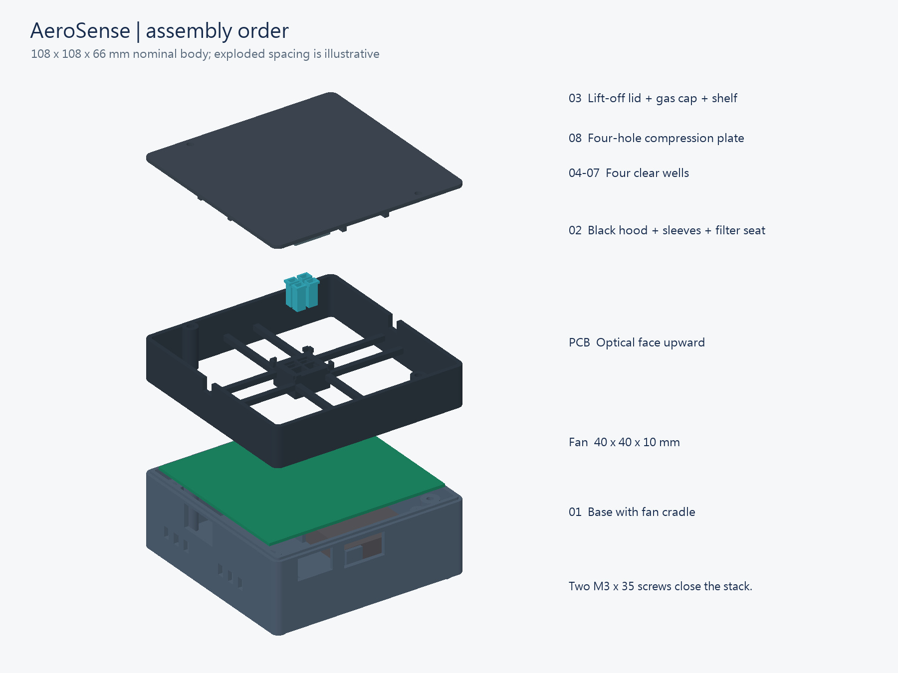
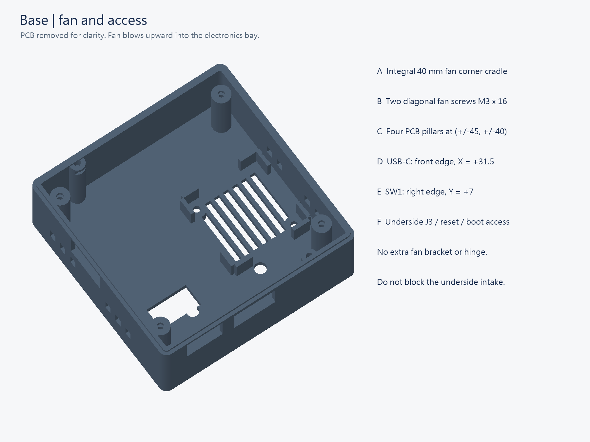
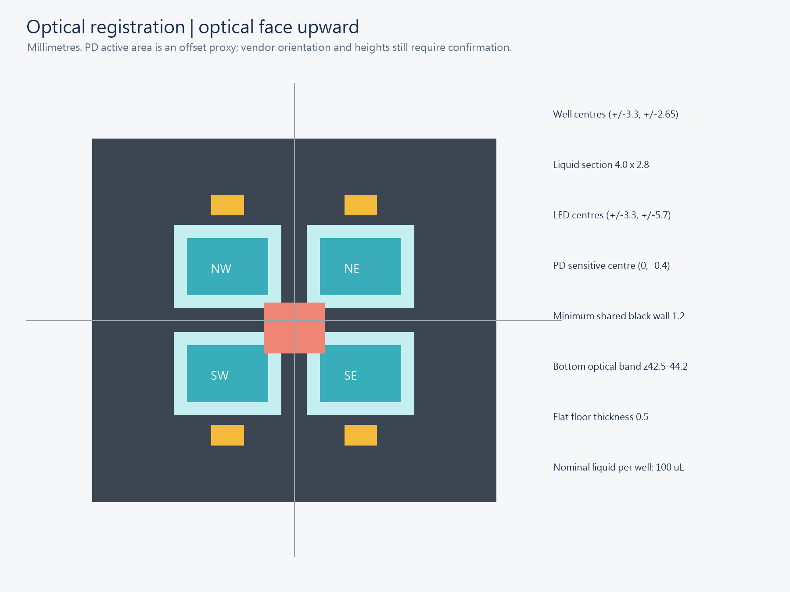
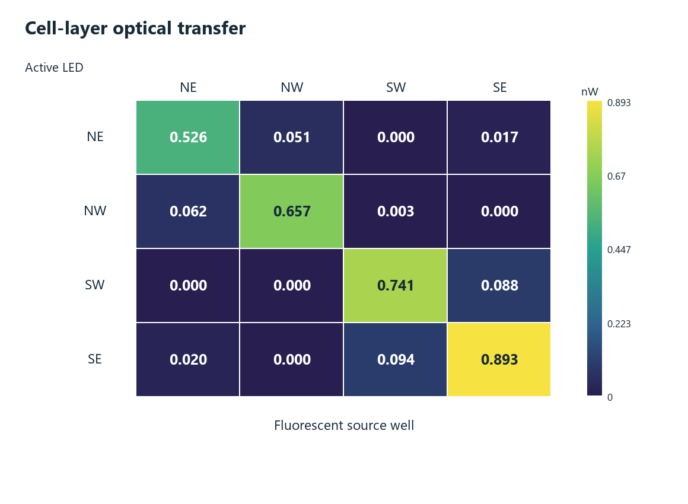
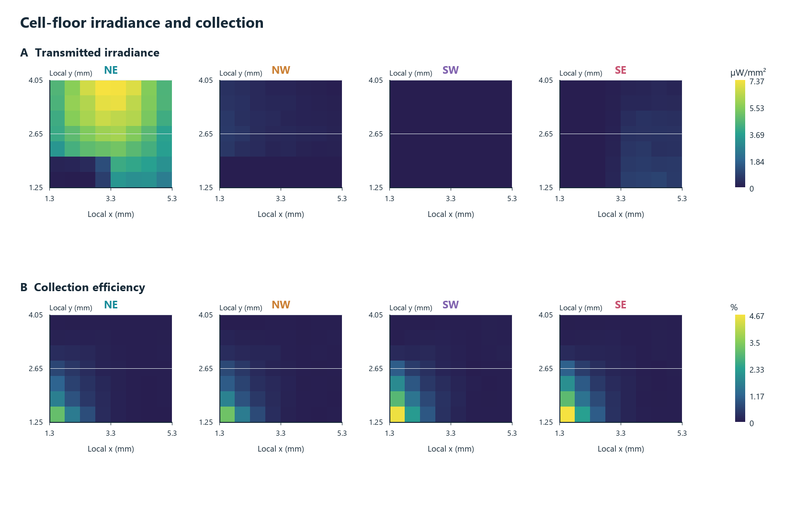
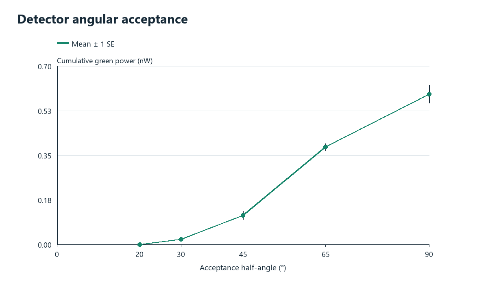
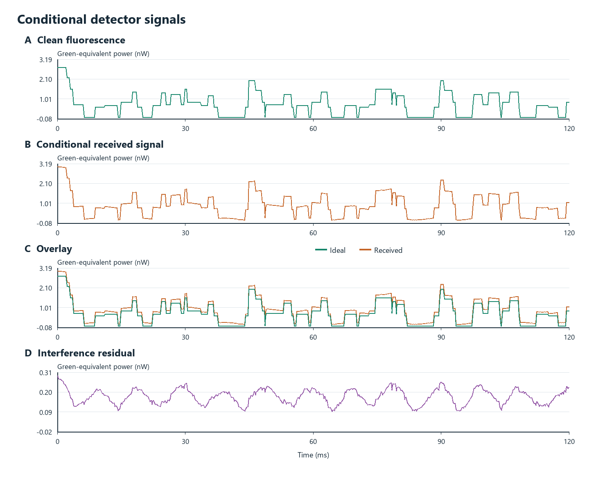
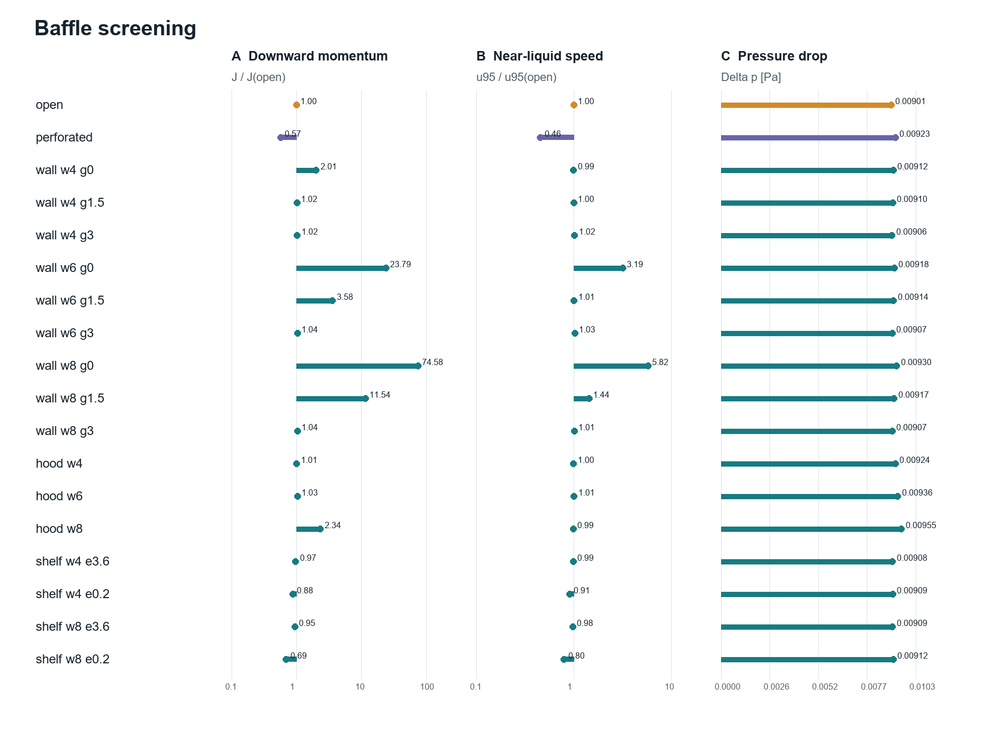
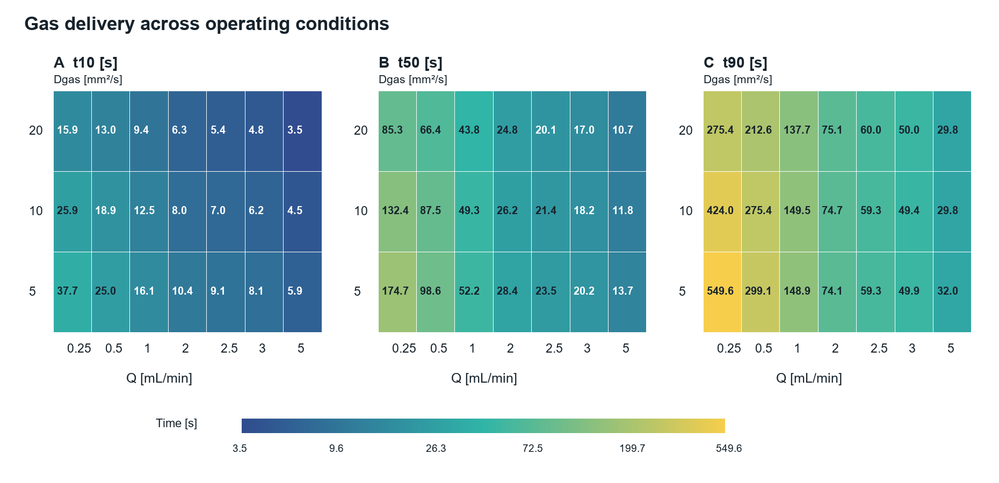
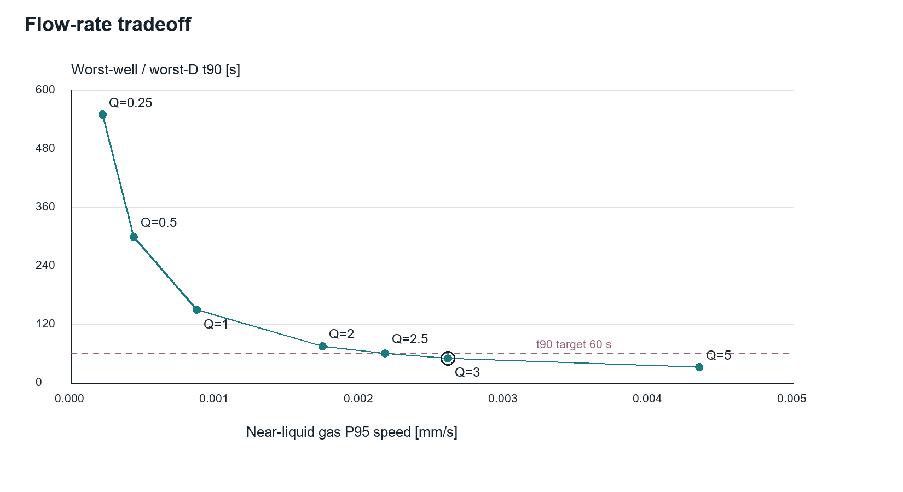

A portable reader for living-cell fluorescence
AeroSense is being developed to measure GCaMP fluorescence from four HEK293T sensor wells exposed to one shared gas sample. Four blue LEDs are frequency-tagged, and one photodiode records their combined optical response. The ESP32 handles excitation and acquisition; a phone provides control and displays data. A future trained model may analyze validated measurements on a phone or cloud service.
The hardware addresses a practical synthetic-biology need: repeatable positioning, optical measurement, removable sample wells, and traceable acquisition in one documented platform. Cell responses, odor classification and real-world detection performance have not yet been established by this package.
Compact, serviceable, and registered to the LEDs
The enclosure integrates a 40 × 40 × 10 mm fan cradle below the PCB, service openings for USB-C and the board switch, and a removable gas lid. Four flat-bottom wells fit inside one opaque carrier with a minimum 1.2 mm central web. The lower 1.7 mm optical band remains exposed; the upper walls are black-sleeved. A removable compression plate loads the four well-rim seals before the outer lid closes.
The 108 × 108 × 66 mm envelope is 31.9% smaller by bounding-box volume than the preceding 114 × 109 × 91 mm layout. This is a CAD size comparison, not a measured mass, thermal or portability result. Clear wells have 4 × 2.8 mm internal sections, a 0.5 mm flat floor and 12.5 mm internal height: 100 µL nominal and 140 µL geometric brim capacity. Leave headspace.
The centers follow the LED geometry (±3.3, ±2.65 mm); the PD sensitive-area proxy is offset by (0, −0.4) mm. The model does not assume that the PD package center is its optical center. Board-side mirroring, populated component heights and connector positions still require manufacturer or bench confirmation.



Print this set, then follow the assembly manual
| STL file | Function | Resin |
|---|---|---|
| 01_base_BLACK.stl | Base / fan cradle / access windows | Rigid PC-GF-like Black |
| 02_black_hood_BLACK.stl | Black optical carrier and hood | Rigid PC-GF-like Black |
| 03_gas_lid_BLACK.stl | Gas lid with integral deflector | Rigid PC-GF-like Black |
| 04_well_NE_CLEAR.stl | NE flat-bottom well | Aqua-Clear Plus |
| 05_well_NW_CLEAR.stl | NW flat-bottom well | Aqua-Clear Plus |
| 06_well_SW_CLEAR.stl | SW flat-bottom well | Aqua-Clear Plus |
| 07_well_SE_CLEAR.stl | SE flat-bottom well | Aqua-Clear Plus |
| 08_gas_compression_plate_BLACK.stl | Removable four-well compression plate | Rigid PC-GF-like Black |
This selected print set uses black structural parts and clear wells; Aqua 8K Gray is not used. Check fit and light leakage on the actual operating parts. Clear-resin wells are for cell-free fit and optical trials until material compatibility, extractables, optical transmission and autofluorescence have been tested. A clear appearance does not establish culture compatibility.
The fan cradle and gas deflector are integral features. The four wells and compression plate remain removable because replacing samples, loading seals and cleaning require access. Removing these interfaces to lower the part count would remove intended functions.
Read the illustrated assembly manual →A physically possible path is not yet a validated measurement
The ideal-material model traces excitation through flat-bottom wells, then isotropic 520 nm emission from a 20 µm bottom cell layer to the finite detector. It includes refractive interfaces, total internal reflection, the PD seal and filter, component obstructions, black surfaces and optional scattering. Perfectly clear resin is the baseline requested here; no purple tint is assumed.
At an assumed 500 µW LED-on power, 470 nm excitation, cell absorption 0.5 mm⁻¹ and quantum yield 1, the NE case delivers 0.593 ± 0.035 nW to the ideal PD (mean ± Monte Carlo standard error across three seeds). These are conditional calculations, not measured GCaMP output. Absorption, expression, quantum yield, excitation power, filter transmission and electronic noise remain experimental inputs.
Across the four LEDs, the intended well supplies 88.6–90.9% of modeled fluorescence at the detector. The rest comes from other wells. The transfer matrix has condition number 1.86 under these assumptions. This supports testing calibrated unmixing; it does not establish four independent channels. A minimum 1.2 mm black web does not eliminate paths through the shared bottom optical band.

Flat floors help geometry, but do not guarantee uniform light
The NE floor receives a modeled mean 4.366 µW/mm²; its spatial coefficient of variation is 46.2%. This directional irradiance map scores upward power crossing the floor, not tissue fluence. The collection map uses 224 point sources and 65,536 packets per point. A side-emitting LED and finite off-center PD make illumination and collection position-dependent even with a perfectly flat well.
Published tissue-photometry maps often show three-dimensional fluence or normalized excitation in scattering tissue. This cartridge contains clear walls, liquid, a cell layer and black boundaries. Its source, geometry, scoring quantity and normalization differ, so reproducing a literature figure's visual shape is not a correctness test. Compare like quantities and retain units.


Frequency recovery does not remove synchronous reflected light
The synthetic demonstration uses 41/67/89/113 Hz, 25% LED duty and a 4 kHz sampling clock. Its amplitudes use the Monte Carlo fluorescence gains. Excitation leakage is an explicit same-frequency background: a lock-in detects it together with fluorescence. In the NE scenario, modeled blue power is 110.488 nW without rejection and 0.02423 nW with the idealized OD3 absorptive filter. A real interference filter may shift at oblique incidence; the stated OD is not a measured installed result.
The animation slows a physical 0.2-second LED waveform by 100×. Moving photon dots are schematic progress along sampled paths, not photon flight times. Mirrored paths illustrate other channels; the frequency-recovery plot uses a separate two-second synthetic record. These are explanatory views, not measured videos or an electronics timing qualification.


Redirect the inlet jet; do not aim for turbulence
The gas model compares open, perforated, wall, hood and shelf configurations using the final common plenum. At the original 1 mL/min reference flow, the inlet Reynolds number is below one: this is laminar flow. A perforated plate can form several narrow jets; simply making holes does not guarantee lower velocity at cells. The chosen integrated candidate is shelf_w8_e0p2, with solid bounds [-7.4, -4, 58.2] to [-0.2, 4, 59.4] mm.
At the finest 0.20 mm grid, the selected shelf changes the maximum-well downward momentum proxy by 36.1% reduction relative to an open plenum. The near-liquid 95th-percentile gas-speed change is 20.1% reduction. These are geometry-specific numerical comparisons. Mesh sensitivity and the tradeoff in circulation balance are reported; this is a practical candidate, not a globally proven optimum.
The proxy is evaluated in the gas and is not cell shear stress or viability. The model does not solve liquid motion, odor dissolution, receptor binding or biological survival. Shared gas means the wells are not gas-isolated. An always-open filtered exhaust during closure lets displaced air escape; the lid must not act as a sealed piston.

A conditional operating point without changing the STL
The original 1 mL/min case remains a reference: near-liquid NE gas t90 is 149.55 s at Dgas=10 mm²/s. A new fixed-shelf study contains 21 operating conditions and 6 numerical checks. The lowest sampled candidate meeting the provisional worst-well/worst-D gas t90≤60 s target is 3 mL/min, with t90=50.00 s across the four wells and assumed Dgas=5/10/20 mm²/s.
At the selected point, the finer-grid result is 50.98 s and the half-timestep result is 49.85 s. Q2.5 gives about60.04 s and is numerically borderline, not proven physically inadequate. The near-liquid gas-speed cap0.01 mm/s is an engineering comparison limit, not a cell-injury threshold. This is a tested numerical candidate, not a global optimum or a measured cell response.
Use one regulated downstream pump and measure approximately3 mL/min through the assembled path. At the same pressure/temperature reference, steady inlet and outlet volume flows are equal; do not impose two independent unequal pump settings. Port Re is 1.768; modeled chamber drop is 0.02737 Pa, excluding filters and external tubing. The current UI does not control or sense actual gas flow. The existing gas movie remains the 1 mL/min baseline.


Explore the actual computed operating points · Read assumptions, pump arrangement and numerical checks
One acquisition path, explicit data states
The ESP32 gates GPIO 25/26/27/32 at 41/67/89/113 Hz. The proposed acquisition uses a 4 kHz sample clock and a two-second I/Q analysis block. GPIO assignments come from the schematic; the physical LED quadrant mapping must be checked for bottom-view mirroring. The analog path uses a photodiode, transimpedance amplifier and ADS8866 ADC. Firmware compilation and synthetic tests do not prove that the physical board works.
The phone interface provides connection, status, acquisition settings, measurements and calibration/normalization workflows. Setup instructions separate demonstration data from live hardware data. No trained, validated odor-classification network is delivered or claimed. Keep raw data, timestamps, configuration, calibration IDs and firmware versions with every acquisition.
Read setup, controls and calibration instructions →Measured correction preserves the original data
The phone UI optionally subtracts a separately measured, cell-free illuminated blank in complex I/Q space, then uses a fluorescence reference for signed phase projection. Living-cell F0 is a separate biological baseline. The illuminated blank already contains dark background, so dark is not subtracted a second time. Raw I/Q, corrected unsmoothed values, calibration IDs and sample labels remain exportable.
Optional timestamp-based EMA is for display averaging; quantitative comparisons retain unsmoothed block values. Removing a stable mean does not remove random noise, clipping or changing same-frequency interference. No simulated anti-waveform or automatic Monte Carlo unmixing is applied. Software evidence is linked by file rather than a frozen test count; compilation and synthetic tests do not demonstrate a working physical PCB.
A complete inventory, with unknown prices left visible
The BOM separates printed STL parts, PCB components and additional purchases. The supplied PCB quote is NT$131,250 for two boards, including design and setup. NT$65,625 is an allocated average from that quote, not a scalable production unit price. Optical filters and compatibility-critical materials must not be assigned invented prices or removed only to make the total look lower.
Cost reduction comes from integral fan and gas features, one shared gas path, reusable electronics and replaceable wells. Final cost depends on vendor quotes, print yield, resin consumption, shipping and reusable equipment. Refer to the workbook's formulas and unknown-price fields rather than reusing the preceding wiki's partial total.
Usability is the next engineering experiment
The project owner's feedback identified missing access features, too many parts and an assembly manual that was difficult to follow. These are requirements for the redesign, not results of an independent usability study. Engineering Cycle 4 connects those requirements to CAD and computational tests. Cycle 5 will test whether another person can build and operate the reader using the manual.
Give participants the same parts and instructions. Record assembly completion, time, help requests, wrong orientation, missed seals and well replacement errors; collect clarity and confidence ratings plus specific suggested changes. Report participant count, role, task outcomes and the resulting manual revision. Do not present an unadministered questionnaire as evidence of user satisfaction.
Participant feedback form → · Read the proposed Cycle 4 and Cycle 5 →Assembly readiness and the next measurement
The base already contains an antenna opening, but the vendor drawing leaves only about0.66 mm nominal clearance during vertical insertion past the upper tongue. Confirm physical module dimensions and print tolerances. All eight STLs and the four wells remain unchanged; mechanical clearance does not establish radio performance.
The BOM now uses three recalculated batch formulas totaling NT$1,115.39 without adding resin twice. The required non-PCB budget is NTD 14,248.79 (USD 448.00), including a NTD 12,000 custom-filter allowance. It is not an order-ready quotation. The formula results replace the handwritten totals; the source note is preserved.
Sodium fluorescein is the proposed cell-free standard. It tests optical readout and channel mixing, not gas transport or cell response. A later matched cell comparison must acknowledge the current approximately5-s recording cadence. Keep usability evidence in Hardware and revisions in Engineering; Entrepreneurship or Education may cross-link findings that address their actual objectives.
One main experiment after essential preflight
After the board arrives, perform a short essential preflight: unpowered fit/leak checks, electrical rails and ADC headroom, dark acquisition, observed LED quadrant mapping and the phone stop command. Stop to troubleshoot clipping, unexpected heating or failed timing QC; correction cannot make invalid data valid.
Then run one continuous cell-free fluorescence-standard experiment: DARK → illuminated blank calibration → independent held-out blank → one fluorescent well at a time → all wells at half and full concentration → repeated half concentration. Record five distinct valid2-second technical blocks per condition, preserve failures and export the complete JSON. First assembly/flashing is separate; the familiarized experimental sequence is planned for about60–120 minutes, not a promised deadline.
The three outputs are concentration response, the single-well transfer matrix, and held-out blank before/after correction. Compare the row-normalized matrix with the homogeneous-volume standard model, not the bottom-cell-layer model. This experiment can support fluorescence acquisition, correction and export; it cannot prove gas t90, odor recognition or cell survival. Manual feedback is a separate planned activity, not four additional mandatory studies.
Read the one-experiment procedure → · Reproducible three-figure analysisBest Hardware evidence map
| Judging theme | Evidence and remaining gap |
|---|---|
| Problem and need | Reusable fluorescence acquisition for cell sensors; explain the intended user and workflow. |
| Learning from users | Manual and study plan exist; independent task results are pending. |
| Demonstrated function | Computational and software evidence exist; real-board proof of concept is pending. |
| Reproduction by others | Publish source, BOM, raw outputs, instructions and limitations together. |
This map paraphrases the four official Best Hardware ballot themes; it does not invent a separate Overgrad scoring rule. Official iGEM Special Prizes.
Current evidence is computational design and software checks. PCB function, assembled fit, biological sensing and independent user outcomes still require real data.
Terms used on this page
| Term | Meaning |
|---|---|
| DLIA | Digital lock-in analysis extracts signal components synchronous with each LED. Same-frequency optical background remains. |
| Calibration | Use measured references to estimate gain, offset, mixing and timing. Preserve raw values and reference IDs. |
| Normalization | Express a result relative to a defined reference or baseline. It does not repair saturation, drift or missing calibration. |
| PD offset | The light-sensitive region can be displaced from the package center. Mechanical and optical origins must be distinguished. |
| Monte Carlo uncertainty | Finite random packet counts create sampling error. More packets do not remove errors in unknown materials or geometry. |
Sources and reproducibility
- Optical assumptions, full sweep, numerical checks and primary references
- Gas model, mesh refinement, rankings and limitations
- Optical primary summary · JSON
- Final gas-path selection · JSON
- Software source, build and test evidence
- Burton et al., PNAS (2020), doi:10.1073/pnas.1920073117
- iGEM · official Best Hardware judging themes
Three page drafts and their placement
These are local editorial drafts. Keep computational predictions, planned experiments and measured results distinct; nothing has been uploaded.
Simulation, measured correction and a focused validation workflow
Gas velocity, gas concentration and detector signal are different observables. Every figure has separate bilingual notes; computed outcomes are not presented as cell experiments.
Complete figures, movies and interactive gallery
Optical signals and interference
Operating flow for the fixed STL
Technical appendix: liquid and membrane sensitivity
The fixed-shelf candidate is 3 mL/min, with worst gas t90≈50.00 s and a refined-grid value of 50.98 s; earlier 1-mL/min results remain the baseline. These times concern gas above the liquid, not bottom-cell or GCaMP response.
The100-µL well and bottom-adherent-cell design remain unchanged. Liquid transport, PDMS and protein-assisted capture require separate validation; hydrophobic PDMS is not automatically a water-vapor barrier. No measured cell response, material compatibility or user satisfaction is claimed.